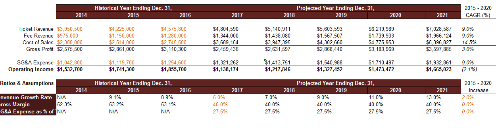
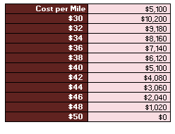
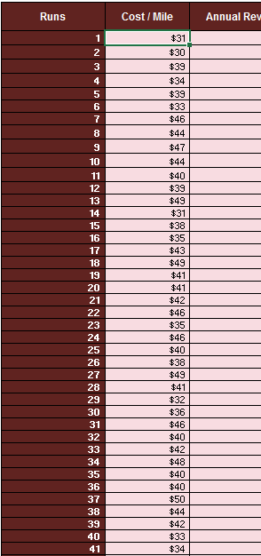

Introduction to Goal Seek, Scenario Manager, Data Tables and Simulation
An airline company you're working for is considering expanding their portfolio by adding Atlanta as a new destination. This would require an initial investment of $250,000 to secure capacity at the Atlanta airport.
Your market research team estimates that the additional route would generate $100,000 in incremental profit in year one. And an additional $50,000 in incremental profit during years two through five. In order to determine whether or not this is a worthwhile investment, let's look into net present value or NPV and internal rate of return or IRR.
NPV accounts for the time value of money and calculates how much the returns are worth in today's terms if you were to receive that in the future time period. In simple terms, NPV is how much a dollar given to you in 5 years is worth today. NPV also includes any cost associated with the investment. If NPV is positive then the project is potentially worthwhile.
IRR looks at the same problem from a different angle. IRR seeks to find what the interest rate must be equal to in order for NPV to be zero. Generally the higher a project's IRR the more desirable it is to undertake. It can be considered the rate of growth a project is expected to generate.
In summary NPV can be viewed as the profitability of a project in absolute terms, where IRR is the profitability of a project in relative terms, or percentages.
Open this Excel file Goal Seek file
First, we'll use the NPV formula before showing how Goal Seek can help us arrive at the same answer much faster and more precisely. First, we'll set up a formula for NPV in Excel which is dependent on the value of our discount rate. Let's type in the formula.
The syntax for NPV is:
=NPV(rate,[value1],[value2],..)Your formula in cell H27 should look like this:
=NPV(H26,B26:B31)We must now enter the discount rate, in our case we will put in the value 10 into cell H26. This gives us an NPV of approxiately €429,000.
To calculate what discount rate will force the NPV to equal zero, we also have a few options. The brute force way is to use trial and error with the input value and see when you're getting close to the desired answer. We can try it with 25%. 35%, 55%. And as you can see as a discount rate becomes larger the NPV is getting closer to zero. So we know that the IRR must be around 55%.
However, if you want to save the time and skip straight to the results, Goal Seek is a perfect tool. In order to quickly determine what the internal rate of return is or in other words, what the discount rate is to make the NPV equal zero.
Excel will then automatically cycle through different values of an IRR to make the NPV equal to 0. The final answer Goal Seek came up with is 57%. (this answer is shown in cell H26 the discount rate) In other words, if the discount rate is 57% the NPV of the investment will be 0. You can copy the value from the discount rate cell into the IRR using goal seek cell.
Now, let's double check our answers. Luckily for us, Excel already has a built-in formula specifically for calculating IRR as long as you have the financial outlay of the investment.
=IRR(B26:B31).As you can see, the formula returns 57%, which is exactly the same result that the goal seek tool has arrived at. Now, you can see Goal Seek allows you to experiment with an input variable to get to and desired answer. We use this all the time to help define our scenarios.
For example, Goal Seek is a perfect tool to determine what the price of electricity needs to be to make a natural gas power plant economic at different gas prices.
As long as you have established an Excel formula or math equation to define how the variable and the end result are related. Goal Seek can help you take the guess work out of your calculation by quickly finding what variable value you need to achieve the end result you want.
In this exercise, we will go through how to use Scenario Manager to try out different values in your variables and compare results.
Scenario Manager sets the parameters we want to a certain value, calculates the results, then instantly recalls and replaces the input value with different sets of numbers based on the scenarios you have set up.
For our problem, the business development team has asked us to explore the potential profitability and growth of a new flight route under different market conditions.
Here is a simplified version of a income statement. In orange are historical numbers for the Ticket Revenue, Fee Revenue, as well as Cost of Sales and SG&A Expenses from the past three years.

A simple calculation will tell us that the company has achieved steady growth and operating income on this new route expansion from 2014 to 2016. In row 66 to row 68, the starting sheet has already calculated the Annual Growth Rate, the Growth Margin, as well as the SG&A (selling, general and admin) Expense as a percentage of ticket revenue.
On the right side of the table, we have projected revenue, costs, and expenses, if revenues, costs, and expenses grow at the rate specified from the assumption table in cells F66 to J68.
The CEO has requested that we determine how the projected performance of the company will look if there are changes in how the company grows revenue and manages costs. In other words, we want to see how the projected income statement changes if the numbers in cell F66 to F68 change.
To set up your Scenario Manager, let's highlight the cells that are going to change. And then go to the Data tab > What-If Analysis > Scenario Manager.
Let's first create a scenario to capture what we have on the table as a baseline for comparison. In the Scenario Manager pop-up window, click on ADD to create a new scenario. A new window called Add Scenario will appear.
First, let's give this scenario a name called Baseline. Now, because we have already selected the cells containing the variables we want to change, the Changing cell field is already filled out for us. However, if you had not selected the cells before going to Scenario Manager, or would like to change your selection, you can also set the parameters here.
If you would like to attach a note on any clarification or background you want to provide for the scenario, you can do so in the comment box here. However, it is not required. It is best practice to leave some comments just in case you or someone else wants to review your assumptions in the future.
Lastly, there are also options to Prevent changes and Hide the scenario if you like. For our purpose, let's keep the default setting and click OK. Then, you will be taken to the final step of setting up the scenario, defining the value of each cell to change in the scenario.
The numbers that are already in cell F66, F67, and F68 are the numbers we want to keep for the scenario, so we can simply click OK. That will take us back to our Scenario Manager pop-up window, so we can see the Baseline scenario that we just set up in the list of scenarios.
Now we can set up other scenarios using the same method. To set up our second scenario, first, we'll click on Add and type in our scenario name, High Growth with Margin Impact. The Changing cells in this scenario do not change from the scenario we just defined. So click OK in the Edit Scenario window.
In the Scenario Values window, we need to update the values of the Changing cells for this particular scenario.
Based on the scenario definition, we want to change the first cell, which is the Revenue Growth Rate, to 0.08. The second cell, which is the Growth Margin, to 0.45 and change the SG&A expenses as a percentage of ticket revenue to 0.3. click on OK to complete the second scenario.
Click on the Show button in Scenario Manager, notice how the results of the income statement changed based on our new assumptions.
Operating Income in year 5 changed from around $1.7 million to around $2.2 million.
The third scenario will be very similar. Click on Add and type in your third scenario name, Low Growth with Margin Impact. The changing sales are the same as the previous two scenarios, so we will simply click OK here. In the Scenario Values window, we can update the values of the changing sales for this scenario. And in this alternative feature, sales have dropped to 3%. Growth Margin is lowered to 32%. And SG&A Expenses as a percentage of ticket revenue is not impacted. So we will keep this at 27.5% After the variable's values have been updated for this scenario, click on OK to finish creating the third scenario.
Now, it's time to set up our last scenario, click Add, And type in the name of our final scenario, Exploding Market Growth. The last scenario is a little bit different because we're considering an additional variable which is the 2% year over year growth as a result of the overall industry market growth, specified in cell K66. Therefore, in a changing cell field, let's add cell K66 and click OK. Because revenue, margin, and expenses stay the same as the original scenario, we will keep those numbers from the Baseline scenario at 8% Revenue Growth Rate, 45% Growth Margin, and 30% SG&A Expense as a percentage of ticket revenue. Our last field is for the year over year growth rate, which we'll set to 2%.
After the variable's values have been updated for this scenario, click OK to complete our fourth and final scenario. Now that everything's set up, there are two ways to view the result of your scenarios.
The first way is to show the result one scenario at a time. To do that, simply click on the scenario name in the Scenario Manager window, then click Show. As you can see, the projective portion of the income statement, which is dependent on a variables that we have specified in our scenario, has just updated. We can toggle between the different scenarios by simply clicking on another scenario name and clicking Show.
However, this view does not allow you to easily compare and contrast the result of all of your scenarios. In order to see the results of all the scenarios at once, we can create a summary by clicking on Summary on the right side of the Scenario Manager window. For Report type, choose Scenario Summary, and let's include Gross Profit, Operating Income, Compound Annual Growth Rate, also known as CAGR, as the metrics to view on the report for the period. One we click OK, the summary will be generated on a new tab. As you can see, the Gross Profit, Operating Income, and CAGR results from each of the four scenarios are listed on this table view. On the left side, there's an outline grouping tool. If we click on the minus sign, it will collapse the rows to only show the bottom row in the same grouping. When you click on the plus sign, everything will reappear. This allows you to view only the part of the summary that you're most interested in.
We are now going to cover how to use a data table to gather multiple outcomes from a formula given a variable input. After this demonstration, you should be able to use a one way data table to understand the range of outcomes. For a given range of a variable input.
We're going to analyze the impact of flight related costs. The forecasting team is looking to get a better understanding of how fuel and labor affect profitability in a proposed new route from Chicago to Atlanta.
The operations team has determined the minimum cost per mile is $30, and the maximum cost per mile is $50, depending on the various market factors. The operations team has also provided estimates for the number of passengers per flight and the revenue per passenger. 170 and 150 respectively.
We've summarized this information in cells B113 through C120. Using the information provided by the operations team, we've determined an estimated profit per flight in cell C120, however, recall that we would like to analyze how profit is impacted by cost per flight. This table only calculates the profits for one value of cost per mile at a time.
However in reality, we are rarely confident on an exact number for the input for one of our variables. This is where the data table tool provides value, as it's going to allow us to fluctuate the value of the cost per mile variable. We've provided the structure of the data table and cells, F113 through G124.
Now we'll demonstrate how to use a one way data table to analyze the impact of cost per mile on profit.
First, we need to link our objective formula located in cell C120 to the data table. - Select G113 and type the equal sign. - Then select C120
=C120Notice that when cost per mile is $50, profit falls to $0. We've now demonstrated how to use a one way data table, to determine the range of outcomes given a variable input. In this case, cost per mile.

Building upon the example of the one-way data table, let's add an additional variable. The number of passengers per flight. We were working to understand profitability, and for the one-way data table, we assumed we knew the demand. However, just like the fuel costs, this variable we'd expect to vary.
The operations team has analyzed historical demand and determined that the minimum demand is 150 passengers, and the maximum demand is 200 passengers.
Now we'll analyze how profit changes when we have two variable inputs, demand, passengers, and cost per mile. For total revenue, we multiply the number of passengers by revenue per passenger, which is $150.
The two-way data table requires a slightly different set up. So now the objective profit per flight must be placed in F142 directly above the column input variable, fuel cost. Again, we've provided the structure of the data table, this time in cells F142 through L153.
Similar to our one-way data table, we've provided the required input and the objective formula in the input parameters table.
The inputs we are going to vary are passengers in cell C143, and cost per mile in cell C146. The objective formula, profit per flight, is in cell C149.
We've supplied a range of values for cost per mile in cells F143 through F153.
Now, since we have a two-way data table, we have a second range of values, passengers, in cells G142 through L142.
Let's begin building our data table.
For example, the value of cell I148 is profit per flight with 170 passengers, and a cost of $40 per mile. This provides a succinct method to display a formula with multiple values for two different inputs. We've now demonstrated how to use a two-way data table to determine the range of outcomes. Under two variables, cost per mile and passengers.
We can use Excel to produce many outcomes for a given objective, such as profit.
You will create a range of values using the random function thus giving the simulator a more realistic scenario.
Scroll down in the excel sheet to view the simulation section.
The operations team has prepared a summary of their outlook on demand over the coming year. They estimate that there will be as few as 135 passengers 10% of the time, 150 passengers 40% of the time, 175 passengers 30% of the time, and 185 passengers 20% of the time.
They also estimate that the cost per mile will be between $30 and $50 with each value in the range equally likely. There is also other inputs such as the number of scheduled flights, miles per flight and revenue per passenger in cells B173 to H174.
Now, we want to take the probability information above along with the inputs in cells in B174 to H174 to simulate annual profit for the proposed Chicago to Atlanta route.
Using Excel's random functionality (number between 0 and 1) and the summary information we will run 90 simulations and compute an average annual profit under the uncertain conditions.
To assist in our calculations later in the exercise, we've created several aimed ranges. - First we have Total_Miles, located in cell E174, which refers to the total number of annual miles for the Chicago to Atlanta route. - Next we have Min_Cost_per_Mile and Max_Cost_per_Mile in cells F174 and G174, respectively. - Revenue_per_Passenger is in cell H174.
The likelihood bins table in cells B181 to D185 identifies four possible outcomes for the number of passengers we can expect per flight.
We must consider the likelihood of each outcome using the operation team's probability estimates. For example, we need to provide Excel with information that will choose 150 passengers roughly 40% of the time as an input for our 90 simulation runs. Likewise, 175 should be an input roughly 30% of the time, and so on.
The reason we say roughly is because we're going to use Excel's RAND function to randomly generate a value which will help us determine which value of passengers to choose for each simulation run.
The first step in this process is setting up likelihood bins. The bins are going to be used in conjunction with the VLOOKUP and the RAND functions. So let's turn our attention to the likelihood bins we've started for you in cells B182 to B185.
You may notice that we have 0%, rather than 40%, for 150 passengers. Notice that 41% is in cell B183. What this means is that when VLOOKUP is provided, say, 0.39, it will choose 150. However, for anything greater than or equal to 0.04, but less than 0.71, VLOOKUP will choose 175 passengers. In a similar manner, 185 will be chosen for RAND values greater than or equal to 0.71, but less than 0.91. For anything greater than 0.91 up to 1, VLOOKUP will choose 135.
It wasn't a likelihood value provided by the operations team. Recall anything greater than or equal to 0, but less than 41%, will result in 150 for our VLOOKUP. That represents our 40% estimated probability, which is basically 40% minus 0%, which equals 40%.
Now, returning to the 71%. Recall that 175 passengers are expected around 30% of the time. 71% minus 41% equals 30% in this case. The reason this works is because if we compute 100 values using the RAND function, we'd expect approximately 30 values between 0.31 and 0.71. Again, this is approximate because RAND uses a random number generator. So each sample of 100 values will be a little different.
Likewise, we expect to see 180 approximately 20% of the time. So we have 91% minus 71%, which equals 20%.
Finally, since RAND returns values between 0 and 1, anything greater than or equal to 0.91, up to 1, should occur roughly 10% of the time, which corresponds to our estimate for 135.
To summarize, we're going to generate 90 random values using RAND.
We're taking advantage of this property of RAND to generate a probability distribution of passengers per flight.
In column D of the likelihood bins table, we have calculated the annual revenue associated with each level of passengers per flight in column C.
passengers per flight * annual proposed flights * revenue per passenger.This will be the final output of the VLOOKUP calculation.
Beginning in cell G181, we've designated a range of cells to calculate profit, which is in column J.
For each of the 90 profit calculations in column J, we'll have two random inputs, Cost per Mile in column H and Passenger Revenue in column I.
Cost per Mile can be anywhere between $30 and $50, where each value in the range is equally likely. This is different than the range of passengers to expect, where we were provided with a probability distribution. Similar to passengers per flight, we're going to use the RAND function to calculate a random value for Cost per Mile, but this calculation does not require a VLOOKUP.
So, let's begin by thinking about this problem. How do we get a value between two numbers using RAND?
We can use the method below:
Let's begin by typing in the formula in cell H182. Then we can explain why it works.
First, begin by typing equal, then the name of the named range that refers to max cost per mile. Max_Cost_per_Mile.
This will serve as our upper bound. Now, type -rand(). This is our random component. We want to multiply this by the difference between our upper bound and lower bound.
So, type *( then the named range that represents the upper bound, Max_Cost_per_Mile minus our lower bound, Min_Cost_per_Mile). Hit enter and we should have a value between 30 and 50.
=$G$174-rand()*($G$174-$F$174)So, why does this work? Remember than RAND returns a value between 0 and 1. When RAND is close to 0, we have our upper bound being subtracted by a number very close to zero, since a number multiplied by close to zero will itself be close to zero. In this case, we'll be close to 50. On the other hand, if RAND is close to one, we have our upper bound 50 being subtracted by a number very close to the difference between 50 and 30, which is 20. 50 minus 20 equals 30, which is close to our lower bound. Finally, if RAND is close to 0.5, we'll be in the middle of our range, around 40.
=RANDBETWEEN(Min_Cost_per_Mile,Max_Cost_per_Mile)Either method results in excel randoming generating a figure betwen $30 and $50.

Turning to column I, let's use VLOOKUP, RAND and our likelihood bins to get a random revenue figure.
=VLOOKUP(RAND(),Likelihood_bins,3,TRUE)We've calculated annual revenue, so now we need to subtract annual cost using the value in cell H182 and the total miles named range.
==I182-(H182*Total_Miles)We've calculated one simulated value of profit. But we want 90, so we need to copy our formulas down the rest of the table. To copy the formulas down, highlight cells H182 to J182. Hover over the bottom right corner of J182 until you see the cross-hair. Once the cross-hair is visible, double click and the formulas will be copied down. Now we have 90 different values of profit, each accounting for the random nature of our inputs.
Instead of one value, we now have a range of values. So how do we use this range to make a decision? Let's turn to the summary information. We've provided summary information that is calculated from the results in cells J182 to J271, our 90 simulation runs.
In cell C190, we have calculated the average profit from the 90 simulation runs. Since the calculation is random, the value will change with each iteration. If you want to recalculate the formulas using new random inputs for Passenger Revenue and Cost per Mile, hit the F9 key. Notice how the average fluctuates each time we press F9.
The good news is the average profit is positive. But the average can be a tricky statistic if the data is skewed. Another way to view our simulation runs is to count the proportion of runs that produce a profit greater than zero.
In cell C191, we've provided this calculation along with a conditionally formatted cell, C192. The conditional formatting rules are based on the assumption that anything greater than or equal to 80% in cell C191 corresponds to a profitable scenario. So it will get a green traffic light icon. Less than 80% but greater than or equal to 75% means the scenario could be pursued, but with caution. So that range gets a yellow light. Scenarios with less than 75% profitable simulation runs should not be pursued and will get a red traffic light icon. Please note these threshold values are hypothetical. In reality, you'd need to work with your team to determine when a scenario is worth pursuing given scenario specific objectives and concerns. We've demonstrated how to use Excel to simulate a random process.
One of the most powerful tools that can be used with Excel, the Solver Plugin. It is useful when you have a function or a series of functions and you want to know what value to put in for X so that F(x) equals a certain kind of Y. We have three different choices for our Y, we can choose a certain target value, or we can choose a maximum or a minimum. We can also place constraints on our X for example that it must be a positive value or it needs to be zero, or one, and so on.
Open the Solver file and use the first tab called Basic Solver - Template. We have a function where we have a discrete annual interest rate. We want to know what the discrete annual interest rate is with an initial balance of €1000, and results in €5000 after 10 years? The interest rate is the unknown which gives us a value of $5000.
If the solver plugin is installed you will see it on the Data tab at the far right.
If it is not installed, from the File menu choose Options. In the Excel Options window choose Add-ins from the left side menu.
Click on the Go... button to manage Excel Add-Ins. Check the box beside Solver Add-In and click OK.
The Solver option now should be displayed on the data tab to the far right.
Click on the Solver option now. For this model we are building our objective is that the cell B17 is to have the value 5000 contained in it. This is to be acheived by changing variable cell C4.
Click Solve. Excel carries out the function and delivers the result of 17.46% in cell C4. The values in column B for each year also changed to reflect the new interest rate resulting in 5000 at year 10.
We don't want to save the result so restore the original value of 10% for the interest.
Next we want to solve where we want to keep our interest rate at 10% and change the initial balance in order to achieve the result of 5000 in 10 years. Use Solver again to calculate the initial balance (the changing variable is now B7).
What if we have a more challenging problem, we would like to know how many years will 1,000 at 10% interest take to get to 5,000? We can't do this using our current functions as each year calculates the balance using the previous year and the interest rate.
What we need to have is a variable for the number of years and it stays in one cell so that we have a reference to the number of years that requires a different formula.
In cell B8 we have our initial balance multiplied by one plus the interest rate, we do this calculation for each year.
=(1+$C$4)*B7When we do repeated multiplication of the same thing by itself it is called An Exponent. In this case the 1000 initial balance is multiplied by the interest rate, the result is again multiplied by the interest rate and so on for 10 years in our example. So in a new cell if you entered the following formula you would get the same result of 2593.74 after 10 years of an interest rate of 10%
=B7*(1+C4)^10Now if we didn't want to state the 10 in the formula and use another cell so that it could be adjusted we can do that too.
=B7*(1+C4)^E7Next we use Solver again our objective is for cell E9 to have the value 5000 and we want solver to change cell E7 (number of years) in order to figure out the solution.
Solver works out that it would take 16.88 years to reach 5000 at a 10% interest rate.